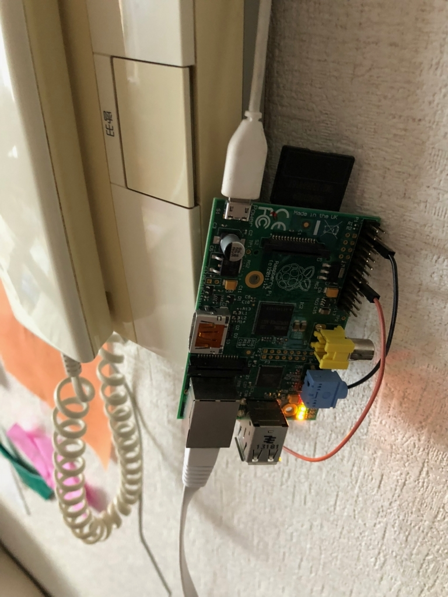
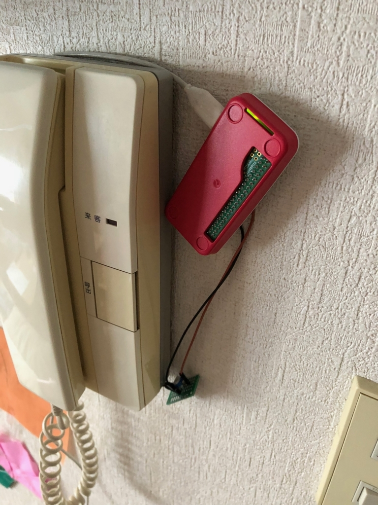

RaspberryPi Zeroでインターホン通知システムをリプレース
以前作った、『RapberryPiで普通のインターホンから通知を送れるようにしてみた』だけど、たいした処理もしてないし、小型化のためRaspberryPi Zeroで実装しなおした。
手順
- macにmicroSDカードを挿入
- microSDカードにraspbian liteをインストールする
wget https://downloads.raspberrypi.org/raspbian_lite_latest
unzip raspbian_lite_latest
df -h # /dev/disk4s2
sudo diskutil unmountDisk /dev/disk4s2
sudo dd bs=1m if=2018-06-27-raspbian-stretch-lite.img of=/dev/rdisk4
touch /Volumes/boot/ssh # ssh接続を有効にする
df -h # /dev/disk4s1
sudo diskutil eject /dev/disk4s1
-
microSDカードを取り出し、RaspberryPi Zeroに挿入
-
電源とLANケーブルをつける
-
MacのLanScanでip特定（なんでもいいけど）
-
ssh接続
ssh pi@192.168.1.XXX
pass:raspberry
-
無線LANの設定とIP固定化
- こちらがわかりやすかった。
-
必要パッケージのインストール
sudo apt-get install python3-pip
pip3 install rpi.gpio
pip3 install requests
sudo apt-get install screen
- あとは以前のプログラムをそのまま持ってきて、GPIOを接続。
- 無事動作確認できた！
小型化成功
-
before
 -
after

配線周りスッキリさせたいな。L時なmicro USBが欲しい。。
購入
ちなみに購入したのはこちらです。zeroはコンパクト仕様なので、micro hdmiアダプタとかもついてて便利。
だが、もうちょっとリーズナブルにならないものか。。
Amazon.co.jp： Raspberry Pi Zero WH Starter Kit 8GB: パソコン・周辺機器